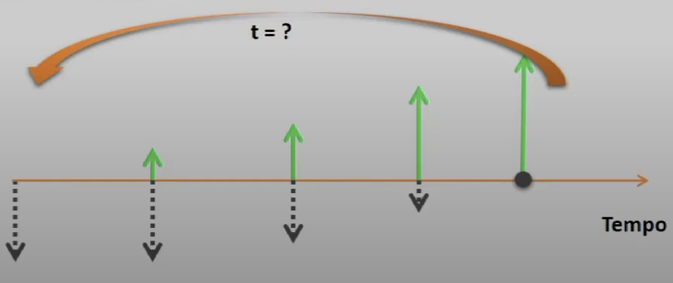

Disciplinas
GESTÃO DE INOVAÇÃO E DESENVOLVIMENTO DE PRODUTOS Concluído
Materiais
Vídeo 2 - Gestão da Inovação e Desenvolvimento de Produtos - Análise de viabilidade financeira sendProfessor ministrante: Alexandre Aparecido Dias (Univesp)
Temas da aula
- Fluxo de caixa
- Indicadores financeiros
Como chegamos à conclusão se vale a pena investir em uma empresa ou em um produto?
Se você tivesse algum dinheiro e tivesse a oportunidade de abrir uma empresa, você abriria?
Projeção de resultados:
- Fluxo de caixa
- Indicadores financeiros
Valor presente líquido (VPL)
Você investe R$ 100.000 em um fundo a uma determinada taxa (TMA). Ao final de 5 anos você retiraria, hipoteticamente, R$ 150.000.
- Para valer a pena abrir uma empresa seria necessário, após 5 anos, que ela produzisse um valor superior a R$ 50.000!
O VPL é uma medida de valor a partir dos fluxos projetados de caixa. VPL positivo é indicativo de viabilidade.
Custo de oportunidade
Suponha que um amigo lhe peça emprestado R$ 10.000,00. A condição que a pessoa lhe propôs foi: depois de 1 ano lhe devolver o valor de R$ 12.000,00. Você aceitaria?
OBS: Este dinheiro lhe renderia 8% a.a. em uma determinada aplicação
R$ 12.000,00 R$ 🡸🡺 10.000,00
Taxa interna de retorno (TIR)
Medida de retorno financeiro do investimento.
- Compara-se com a taxa mínima de atratividade.
Payback
- Tempo de retorno do investimento
- Determinação de quanto tempo leva para o projeto se pagar

Concluindo
- Certifique-se de que as projeções estão fundamentadas nas decisões que sustentaram o plano de negócio.
- Faça análise de cenários para gerenciar riscos.